WebApp para descubrir tragos de bebidas. Trabajo presentado para la cátedra de Proyecto Final de la UTN FRLP
Nombre del proyecto: Fondo Blanco (FoB)
Descripción: WebApp para descubrir, compartir, y valorar recetas de tragos de bebidas
Tipo: Proyecto académico - Cátedra Proyecto Final UTN FRLP
Rol: Desarrollador Full-Stack
Fecha: Marzo - Diciembre 2025
Tecnologías Usadas: React, .NET, MySQL, HTML, CSS
Colaboradores: Gabriel Scarafia, Matias Russo, Tomas Sbert
Visitar la páginaEl proyecto consistió en diseñar una plataforma social dedicada a descubrir, compartir y valorar recetas de tragos. El desafío principal fue crear una experiencia atractiva e intuitiva donde los usuarios pudieran subir contenido propio —incluyendo fotos, ingredientes y pasos detallados— y, al mismo tiempo, fomentar la interacción mediante desafíos semanales temáticos.
Junto a mi equipo, comenzamos analizando aplicaciones de referencia y definiendo las funcionalidades clave: carga de recetas con imágenes, sistema de valoración, perfiles de usuario y secciones dinámicas para desafíos. A partir de esto, diagramamos el flujo de usuario y diseñamos una interfaz que simplificara la creación de contenido. Durante el desarrollo, priorizamos la modularidad, la experiencia móvil y la integración fluida entre frontend y backend.
Construimos una web app que permite a los usuarios subir fotos, describir paso a paso cómo preparar un trago e indicar ingredientes y utensilios necesarios. Incluimos un sistema de valoración, feed dinámico, filtros de recetas y un módulo de desafíos semanales para incentivar la participación. El resultado fue una plataforma social colaborativa y visualmente atractiva, con foco en la comunidad y la facilidad para compartir nuevas creaciones.
Carga completa de recetas con ingredientes, pasos detallados, imágenes y metadatos como dificultad y tiempo de preparación.
Sistema integral de interacción con likes, dislikes, comentarios, favoritos y compartir en redes sociales.
Perfiles personalizables con historial de publicaciones, seguidores/seguidos y estadísticas de actividad.
Dinámicas gamificadas con ingrediente semanal, ranking de puntos e incentivos para la participación comunitaria.
Búsqueda avanzada por título, descripción, ingredientes, etiquetas y perfiles de usuario.
Sistema de alertas para likes, comentarios, favoritos y respuestas de comentarios.
Modelo relacional y estructura de datos del proyecto.
Estructura de clases y relaciones del sistema.
Diseño de la interfaz de usuario y experiencia de usuario.
Acceso a Drive con propuesta del tema, plan de gestión (alcance, cronograma, riesgos), presupuesto y más.
Implementación total de objetivos académicos y funcionales.
Extensa biblioteca de interfaces para una experiencia completa.
Excelente gestión del presupuesto y tiempos del proyecto.
Fomento de la comunidad mediante desafíos y valoraciones.
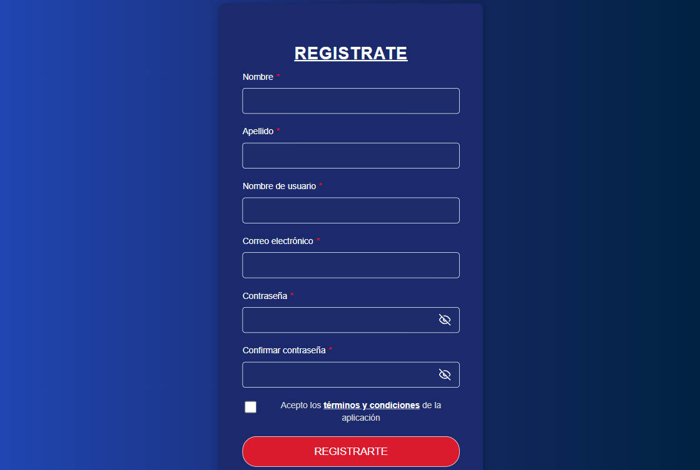
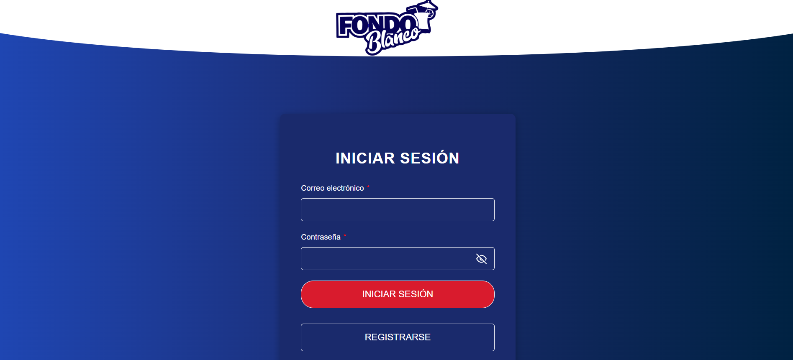
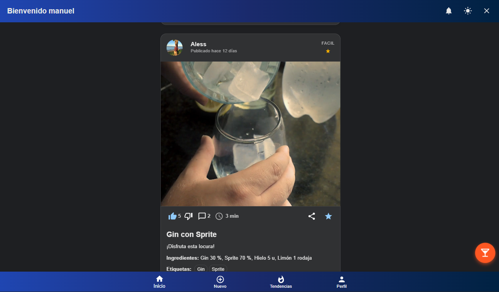
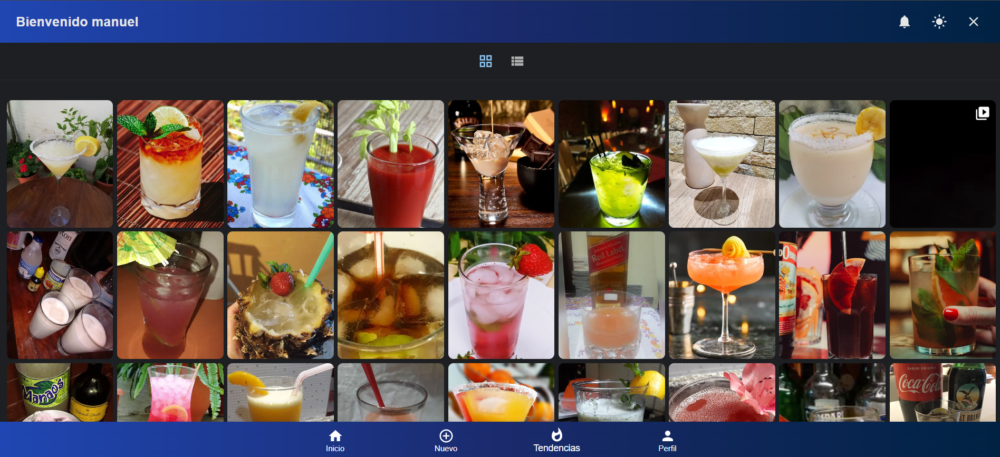
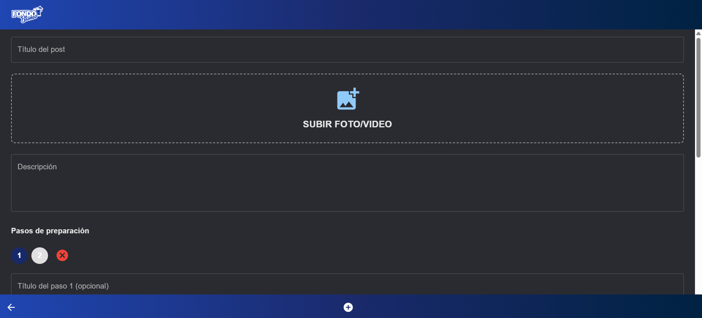
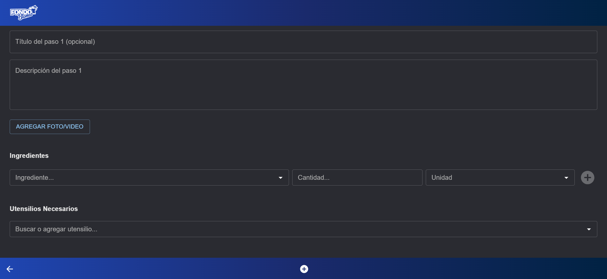
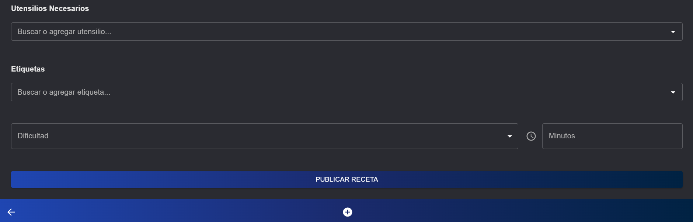
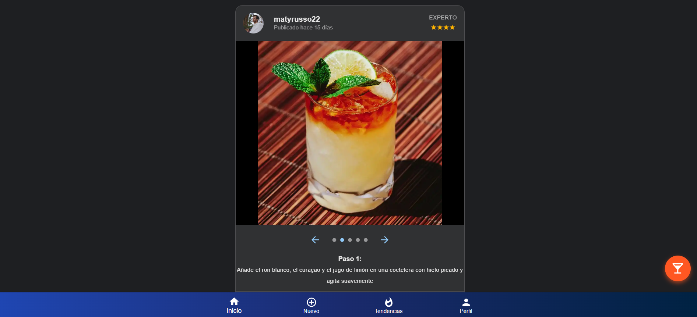
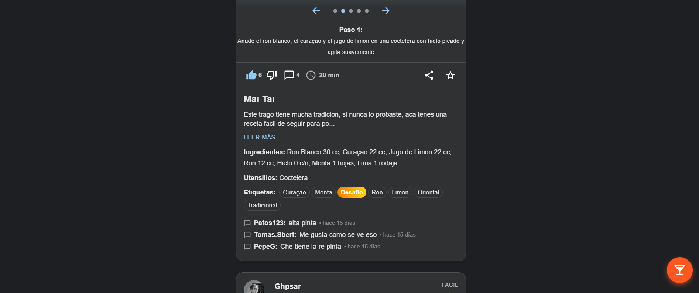
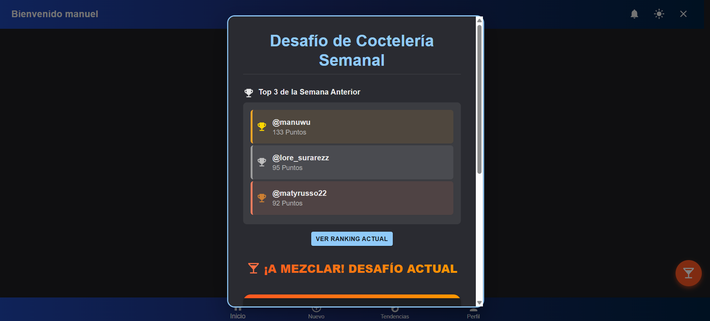
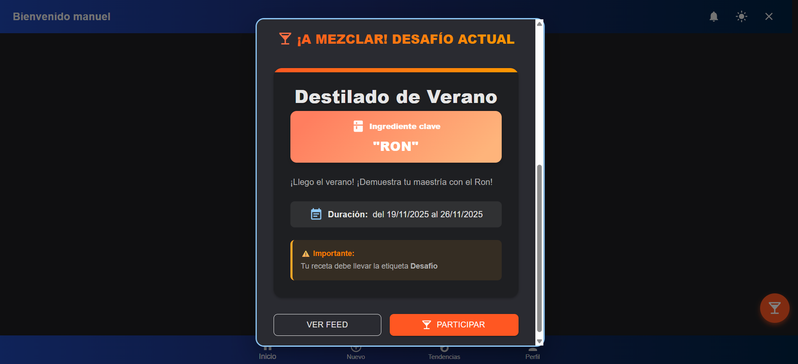
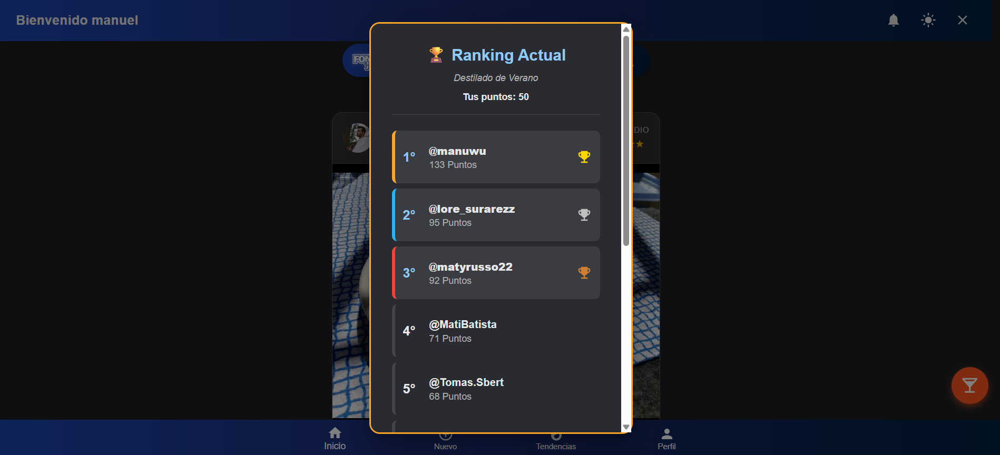
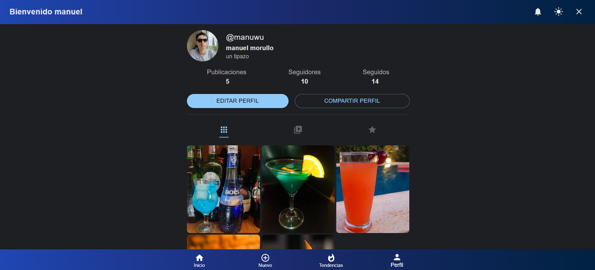
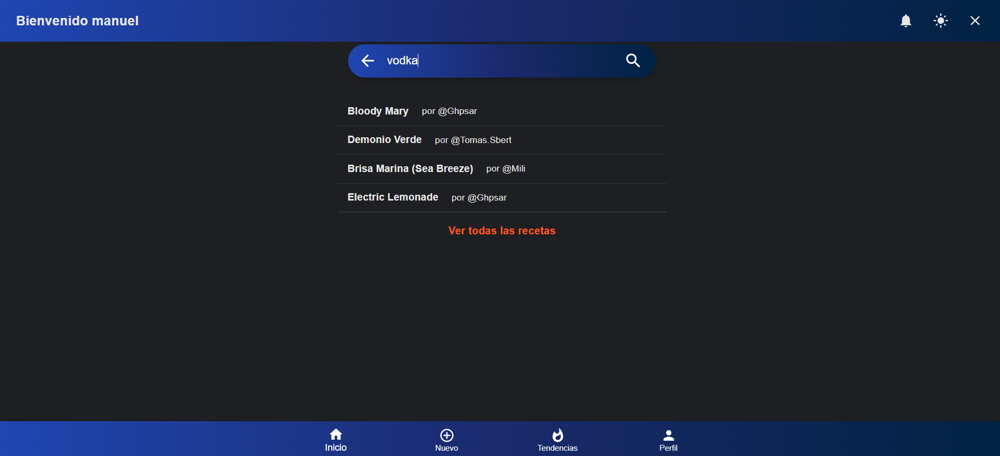
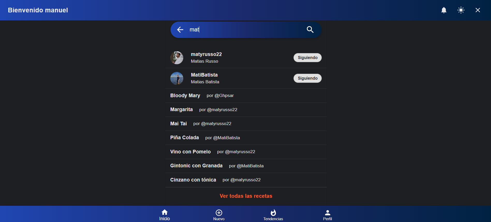
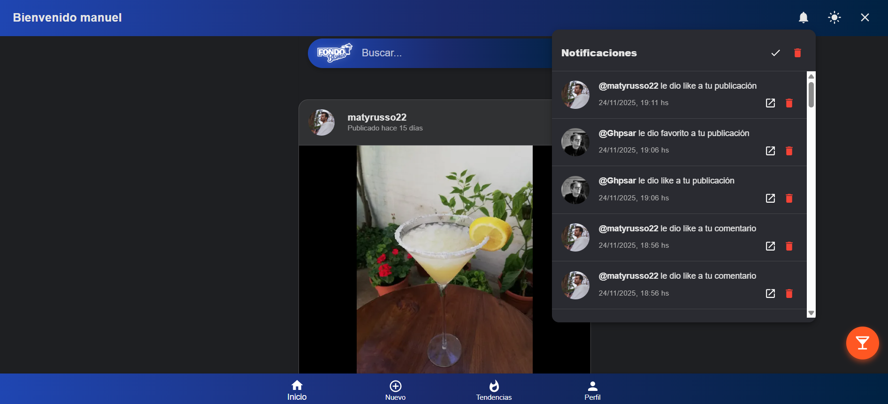